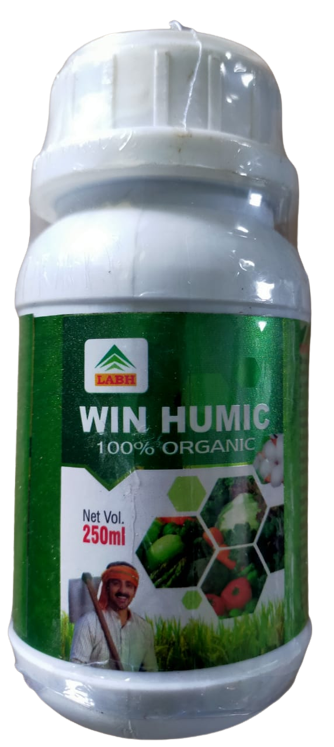

Organic Fertilizer
Win Humic
Humic Acid 12.5 % — Root Development & Growth Regulator

About Win Humic
Humic Acid 12.5 % — Root Development & Growth Regulator. Manufactured and supplied by Lakshmi Advance Biotech for dependable field performance.
Composition
- Technical Name: Humic Acid 12.5 %
- Type: Root Development & Growth Regulator
- Mode of Action: Growth Regulator
Dosage
- Dose: 50ml/15 ltr water
Method of application
- Application: spray
- Usage: spay after fertigation,plant growth stage , for better result use 15/20 days interval in one crop in twise
Details
- Crop Recommended: Tomato
- Crop Sutable: cotton, all vegetables,fruits, flower, pulses, soyabean paddy, wheate, maize( makka), sugarcan, and all crop
Key benefits
- Increase the plant size
- Increase the plant branches
- Improves root development
- Improves the plants quality
- Improves the plant protection capacity and make plant healthy
- Provide nutritional support to plant at critical stages of growth and enhance quality
- Release nutrients in plant rhizosphere thus stimulate growth of beneficial micro organisms
- Eco-friendly and non-toxic
- Helps in rapid & healthy growth of crops
- Increase root respiration & formation, thickens, enlarges & blesses the leaf growth